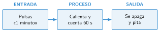
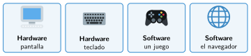

Concepto de programa
🤔 Pienso5 min
Qué hago aquí: Piensa un momento y contesta con lo que ya sabes. No pasa nada si no lo sabes: es para empezar.
Escribe en cinco pasos cómo te lavas los dientes. Dáselo a un compañero. ¿Podría seguirlo sin equivocarse?
📖 Leo y aprendo15 min
Qué hago aquí: Lee despacio, mira los dibujos y los ejemplos, y quédate con la idea clave del final.
Un ordenador no piensa. Solo hace lo que le dicen. Lo que le dicen está escrito en un programa.
Las instrucciones de un programa deben ser:
- Ordenadas: se hacen una detrás de otra.
- Claras: dicen exactamente qué hacer.
- Finitas: el programa termina.
Casi todos los programas recogen datos, hacen algo con ellos y dan un resultado:

Un ordenador tiene dos partes. El hardware es lo que se puede tocar: la placa, la pantalla, los cables. El software son los programas.

✏️ Hago20 min
Qué hago aquí: Haz las actividades en orden. Empieza siempre por las básicas.
Completa: un programa es una lista de que sigue un .
Escribe H (hardware) o S (software) al lado de cada uno.
- teclado
- juego del móvil
- placa Micro:Bit
- navegador web
Completa la tabla.
| Programa | Entrada | Proceso | Salida |
|---|---|---|---|
| Calculadora | |||
| Ascensor |
Ordena estas instrucciones para hacer una tostada. Escribe el número delante.
- Untar la mantequilla.
- Sacar el pan.
- Bajar la palanca.
- Meter el pan en la tostadora.
La instrucción «esperar un rato» no es clara. Escríbela mejor. Explica por qué la tuya es más clara.
✏️ Puedes responder escribiendo, con un dibujo o un esquema, o contándolo en voz alta.
🚀 Amplío (si quieres saber más)
Qué hago aquí: ¿Has terminado? Lee la curiosidad o elige el reto. Es voluntario.
Un compañero hace de robot. Solo sabe avanzar un paso, girar a la derecha, girar a la izquierda y coger. Escribe un programa para que llegue a la papelera y coja una bola de papel. Pruébalo.
✅ Compruebo5 min
Qué hago aquí: Contesta sin mirar la ficha y marca cómo lo llevas.